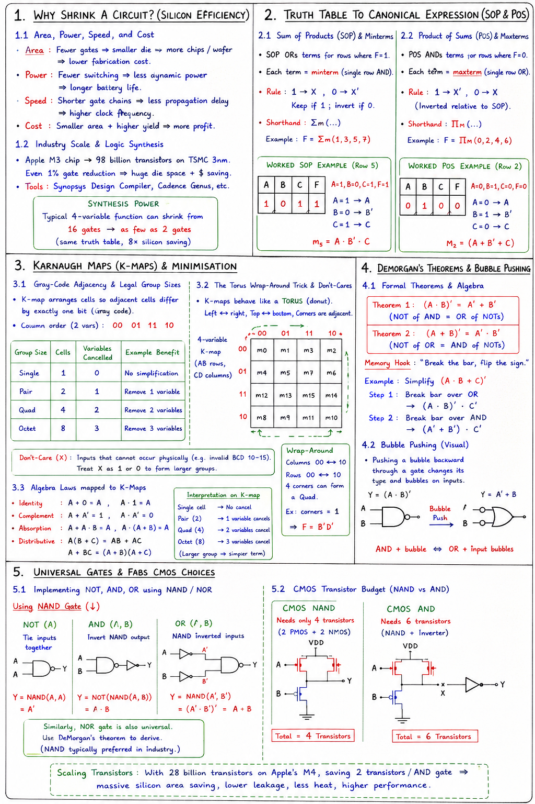

Short Notes & Visual Summary
Handwritten / quick summary notes for Lecture 02:

Click image to open high-resolution version in new tab
Why Shrink a Circuit? (Silicon Efficiency)
1.1 Area, Power, Speed, and Cost
Every extra gate in a digital circuit represents silicon area, power burned, and picoseconds lost. Shrinking a circuit brings four immediate advantages:
- Area: Fewer gates mean smaller die size, allowing fabs to fit more chips per wafer, lowering fabrication costs.
- Power: Fewer switching events mean less dynamic power dissipation, extending battery life.
- Speed: Shorter gate chains reduce signal propagation paths, enabling higher clock frequencies.
- Cost: Smaller silicon area + higher yield = increased profits.
1.2 Industry Scale & Logic Synthesis
Apple's M3 chip packs 98 billion transistors on TSMC's 3nm process. At that scale, even a 1% gate reduction saves massive die space and millions of dollars. This is why semiconductor companies run automated logic synthesis tools (e.g., Synopsys Design Compiler, Cadence Genus) to minimize logic gates automatically before silicon fabrication.
A typical 4-variable boolean function can easily shrink from 16 gates to as few as 2 gates, keeping the exact same truth table while saving 8x silicon space.
Truth Table to Canonical Expression (SOP & POS)
2.1 Sum of Products (SOP) & Minterms
A truth table cannot be directly minimized; it must first be translated into boolean algebra. Sum of Products (SOP) ORs together terms representing inputs where output F = 1.
- Each term in SOP is called a minterm (representing a single row's AND configuration).
- Rule: Variable = 1 → X; Variable = 0 → X'. Keep it if it is 1; invert if 0.
- Shorthand: Written using Sigma (Σm) notation. For example, F = Σm(1, 3, 5, 7).
For Row 5 where A=1, B=0, C=1, F=1:
- A=1 → A
- B=0 → B'
- C=1 → C
- Minterms result: m5 = A · B' · C
2.2 Product of Sums (POS) & Maxterms
Product of Sums (POS) ANDs together terms representing inputs where output F = 0.
- Each term is a maxterm (representing a single row's OR configuration).
- Rule: Variable = 1 → X'; Variable = 0 → X. (Inverted relative to SOP).
- Shorthand: Written using Pi (ΠM) notation. For example, F = ΠM(0, 2, 4, 6).
For Row 2 where A=0, B=1, C=0, F=0:
- A=0 → A
- B=1 → B'
- C=0 → C
- Maxterm result: M2 = (A + B' + C)
Karnaugh Maps (K-Maps) & Minimisation
3.1 Gray-Code Adjacency & Legal Group Sizes
Karnaugh Maps (K-maps) re-organise truth tables visually so adjacent cells differ by exactly one bit. This allows the algebraic complement law (X + X' = 1) to occur automatically through grouping.
- Gray-Code Ordering: Columns are ordered 00 → 01 → 11 → 10 (not binary count). This guarantees that every step flips just one variable.
- Legal Group Sizes: Must be powers of 2 (2n). Grouping larger
blocks cancels more variables:
- Single (1 cell): 0 variables cancel.
- Pair (2 cells): 1 variable cancels.
- Quad (4 cells): 2 variables cancel.
- Octet (8 cells): 3 variables cancel.
3.2 The Torus Wrap-Around Trick & Don't-Cares
K-maps are logically represented on a torus (donut). Opposite edges and all four corners wrap around and are adjacent.
- Wrap-Around: Left column matches right column; top row matches bottom row. The 4 corners can form a single Quad, simplifying to F = B'D' in a 4-variable map.
- Don't-Care (X): Outputs for inputs that physically cannot happen (e.g. invalid BCD codes 10-15). You can treat X as 1 or 0, depending on which assignment yields larger groups.
3.3 Algebra Laws mapped to K-Maps
Every visual group drawn on a K-map corresponds directly to algebraic Boolean laws:
- Identity: A + 0 = A, A · 1 = A
- Complement: A + A' = 1, A · A' = 0
- Absorption: A + A · B = A, A · (A + B) = A
- Distributive: A(B + C) = AB + AC; A + BC = (A + B)(A + C)
DeMorgan's Theorems & Bubble Pushing
4.1 Formal Theorems & Algebraic Simplification
DeMorgan's theorems allow you to convert expressions between AND and OR worlds:
- Theorem 1:
(A · B)' = A' + B'(NOT of an AND is the OR of NOTs).
- Theorem 2:
(A + B)' = A' · B'(NOT of an OR is the AND of NOTs).
- Memory Hook: "Break the bar, flip the sign."
Example Simplification:
Simplify (A · B + C)':
- Break the outer bar over the OR: (A · B)' · C'
- Break the remaining bar over the AND: (A' + B') · C'
4.2 Bubble Pushing Visual Motion
DeMorgan's theorem can be applied graphically through bubble pushing:
- Pushing an output bubble backward through an AND gate transforms it into an OR gate with bubbles on its inputs.
- This makes DeMorgan's rules intuitive to apply visually during schematic reviews.
Universal Gates & Fabs CMOS Choices
5.1 Implementing NOT, AND, OR using NAND/NOR
A gate type is universal if it can implement all possible boolean functions on its own. Both NAND and NOR gates are universal.
Building Gates with NAND:
- NOT(A): Tie inputs together → NAND(A, A) = A'.
- AND(A, B): Invert a NAND's output → NOT(NAND(A, B)).
- OR(A, B): NAND the inverted inputs → NAND(A', B') = (A' · B')' = A + B.
5.2 CMOS Transistor Budget (NAND vs. AND)
At the physical transistor level, semiconductor fabs prefer NAND over AND gates:
- CMOS NAND: Needs only 4 transistors (2 NMOS + 2 PMOS in series/parallel). This is a natural physical mapping.
- CMOS AND: Needs 6 transistors (a 4-transistor NAND followed by a 2-transistor NOT inverter).
With 28 billion transistors on Apple's M4 chip, saving 2 transistors per AND gate adds up to massive savings in silicon space and thermal dissipation across the chip.
Original PDF Notes
Below is the original PDF document for your reference: